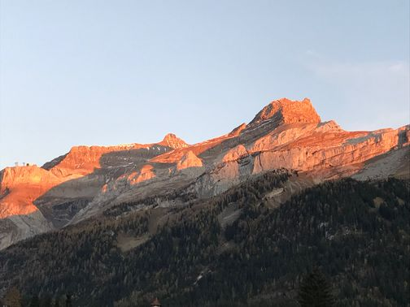

24 - 29 Octobre 2021
Les
Diablerets, Switzerland

The Baum-Connes conjecture bridges Operator Algebras, Index Theory, Geometric Group Theory and Metric Geometry. It is therefore a unifying theme in Mathematics. The mini-courses will serve as an introduction to the subject, while the talks by younger experts will explain the search towards positive results and also towards counterexamples.
The arrival day is Sunday, May 23. Dinner will be served for everybody in the Hôtel Les Sources at about 7 pm.
The scientific program begins on Monday, March 24, at 9 am.
The conference ends at lunchtime on Friday, May 28.
| Monday | Tuesday | Wednesday | Thursday | Friday | |
|---|---|---|---|---|---|
| 8:45-9:45 am | Valette 1 | Julg 2 | Valette 3 | Azzali 1 | Oyono-Oyono 2 |
| 9:45-10:45 am | Julg 1 | Flores | de la Salle 2 | Gomez-Aparicio 2 | Sawicki 2 |
| 10:45-11:15 am | Coffee Break | ||||
| 11:15-12:15 am | de la Salle 1 | Julg 3 | Gomez-Aparicio 1 | Nishikawa 1 | Nishikawa 2 |
| 12:30 am | Lunch and free time | ||||
| 4:30 pm | Tea and Coffee | ||||
| 5:00-6:00 pm | Valette 2 | Chatterji 2 | Oyono-Oyono 1 | Sawicki 1 | |
| 6:00-7:00 pm | Chatterji 1 | Mohsen 1 | Mohsen 2 | Azzali 2 | |
| 7:15 pm | Dinner | ||||
Transfer at Aigle: From Aigle railway station, connecting train to Les Diablerets (ASD)
For timetables of your public transport connections, please visit: www.sbb.ch/en
Take A9 motorway, exit at Aigle or Bex/St Triphon and follow signs for Les Diablerets
{kind=link}